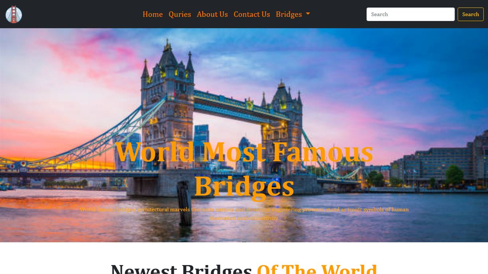

Present learning visually
The subject needed an engaging visual format that makes educational information enjoyable to explore.
Visual content organisation
Clear information structure is combined with visual presentation for landmark bridge information.
Live educational website
A live educational website presenting the topic in a more visual and accessible way.